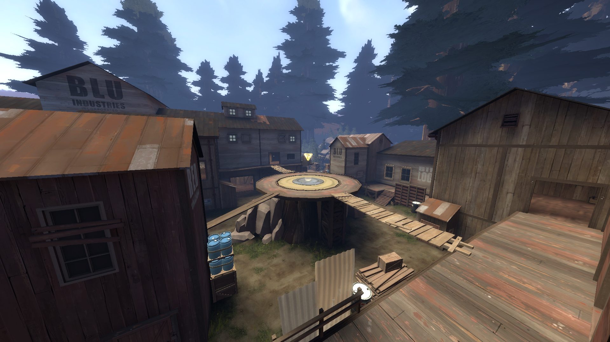
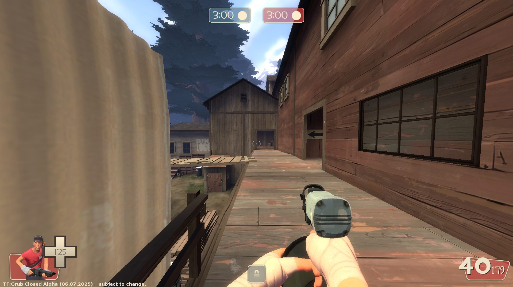
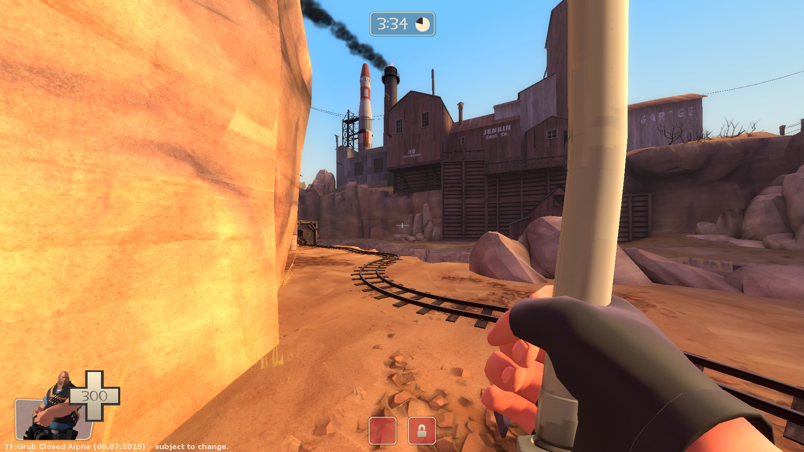
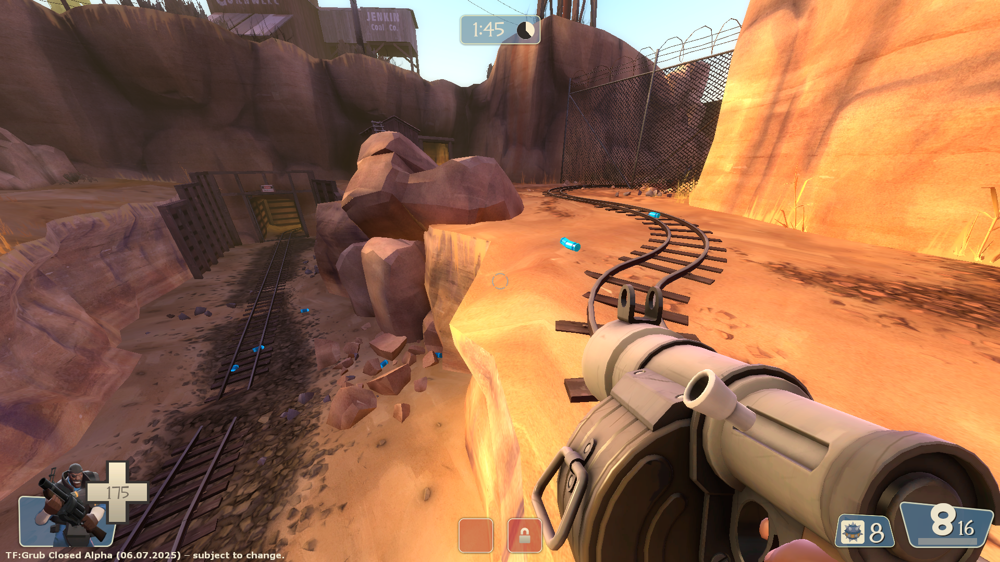

Hello, Grub here, I guess this is a page for my TF2 Sourcemod.
It's Based on the TF2 Pyro Update page from valve, trust me, I'm not an HTML god, just though having some page like this could be cool.
It's Based on the TF2 Pyro Update page from valve, trust me, I'm not an HTML god, just though having some page like this could be cool.

Grub Fortress
Welcome to the website for my TF2 Sourcemod
Links
New Weapons
Nailgun (Scout secondary)
- A great tool that should be in every handy-mans toolbox. not sure if it should be used as a weapon
RPG (Soldier primary)
- Rockets travel in an arc
- 20% damage bonus
- -50% clip size
Leadpipe (Heavy melee)
- +50% damage bonus
- 20% slower firing speed
- No random critical hits
The Pipebomb Launcher (Demoman secondary)
- Shoots out detonatable pipebombs
- Grenades have very little bounce and roll
- Alt-Fire: Detonate all stickybombs
The Under Pressure (Medic primary)
- +50% faster firing speed
- -25% damage penalty
- -75% clip size
The Perforator (Heavy primary)
- +100% damage bonus
- -50% max primary ammo on wearer
- 15% slower spin up time
- Shoots nail projectiles
The Big Owen (Heavy primary)
- 50% faster spin up time
- 100% more accurate
- Silent Killer: No barrel spin sound
- -15% damage penalty
- 150% slower firing speed
- -75% max primary ammo on wearer
- -50% damage penalty vs buildings
Metal Backpack (Engineer secondary)
- +25% max metal on wearer
Maps
Koth_Landfall

Screenshots



Weapon Rebalances
All Sniper Rifles
- Instead of projecting a laser dot, the sniper rifle will now emit a continuous laser beam from the sniper to the point they are aiming at.
The Crusader's Crossbow
- 50% slower reload time
The Family Business
- Weapon can now be equipped on Engineer, Heavy, Soldier and Pyro
The B.A.S.E. Jumper
- Weapon can now be re-deployed an infinite amount of times
The Ambassador
- Weapon will always deal the same amount of headshot damage regardless of range
The Axtinguisher
- 100% critical hit vs burning players
- -33% damage penalty
- No random critical hits
- This weapon holsters 35% slower
Baby Face's Blaster
- On Hit: Builds Boost
- Run speed increased with Boost
- -34% clip size
- 10% slower move speed on wearer
- 25% Boost reduced on air jumps
The Scottish Handshake
- When weapon is active:
- Move speed increases as the user becomes injured
- You are Marked-For-Death while active, and for short period after switching weapons
- -90% less healing from Medic sources
The Sandman
- Alt-Fire: Launches a ball that slows opponents, and stuns opponents at long range
The Gunboats
- Weapon can now be equipped on Soldier and Demoman
QnA
Q: Why did you make the mod?
A: No reason at all to be honest, just made it for fun
Q: Why is the mod full of unoriginal ideas
A: idk, just though these ideas would be cool, like i said, I'm just makin a sourcemod for fun
Q: Did you get permission to use the assets from [X] creator
A: Yeah, whenever I add in stuff, I make sure to ask the original creator if they are fine with their stuff being included in a sourcemod, most of the time either on their gb profile page, of the page for the mod itself
uhh, i guess i might add more questions later
Credits
- Weapon Models
-
The Under Pressure – Haau, Dim
https://gamebanana.com/mods/529270
The Perforator – Haau, kibbleknight -
The Big Owen – Haau, kibbleknight
https://gamebanana.com/mods/603188 -
The Pipebomb Launcher – Haau, Extra Ram
https://gamebanana.com/mods/603188 - Community Help/Contributions
- BetaM – Custom Items, Credits menu, misc. fixes
https://www.youtube.com/BetaM - Better Fortress 2 – The mod Grub Fortress is a fork of
https://github.com/ALIEN31ITA/Better-Fortress-2 - Team Fortress 2 Classic – Rocket Gravity Attribute
https://www.tf2classic.com - Team Fortress 2 Goldrush – Removed MYM Hud, And V_Model Support
https://www.tf2goldrush.com/ - Toru the Red Fox – Old TF2 Main menu
https://github.com/TorutheRedFox/source-sdk-2013 - Solo Fortress 2, Kepler – Item schema delete attribute support
https://moddb.com/mods/solo-fortress-2 - Hactica – Ultimate Weapon Animation Fixes
https://gamebanana.com/wips/86367 - FlaminSarge – Class Team color changes in the loadout menu
https://github.com/ValveSoftware/source-sdk-2013/pull/1305 - NvC-DmN-CH - HL2 Mirrored code
https://github.com/NvC-DmN-CH/Half-Life-2-Mirrored
https://gamebanana.com/mods/516732
© 2025 Grub Corporation, all rights reserved. Valve, the Valve logo, Half-Life, the Half-Life logo, the Lambda logo, Steam, the Steam logo,
Team Fortress, the Team Fortress logo, Opposing Force, Day of Defeat, the Day of Defeat logo, Counter-Strike, the Counter-Strike logo,
Source, the Source logo, Valve Source and Counter-Strike: Condition Zero are trademarks and/or registered trademarks of Valve Corporation.
Team Fortress, the Team Fortress logo, Opposing Force, Day of Defeat, the Day of Defeat logo, Counter-Strike, the Counter-Strike logo,
Source, the Source logo, Valve Source and Counter-Strike: Condition Zero are trademarks and/or registered trademarks of Valve Corporation.